Metodología
El procedimiento para la generación de indicadores sobre el desempeño del sector de telecomunicaciones costarricense comprende tres fases: la recopilación, revisión y análisis y la generación de resultados. A partir de la publicación del primer informe de indicadores del sector, denominado “Estadísticas del Sector de Telecomunicaciones en Costa Rica 2010-2012”, en setiembre del 2013, esta Superintendencia llevó a cabo, además, un proceso de revisión y validación de las series correspondientes al período 2010- 2013, con el objetivo de incorporar correcciones que fueron señaladas en la fe de erratas del informe mencionado. Asimismo, se incorporaron correcciones provenientes de operadores y proveedores de servicios que han realizado cambios, con la justificación correspondiente, o que recién se integran al proceso de reporte regular de estadísticas.
Por tanto, para la construcción del presente informe, no sólo se procesó y revisó la información remitida por los operadores para el 2013, sino que también se revisaron, validaron y corrigieron las series de datos construidas para el período 2010-2012, anteriormente publicadas con carácter preliminar y sujetas a revisión. De allí que algunas de las cifras publicadas en setiembre del 2013, hayan sido modificadas y actualizadas.
Figura 1: Proceso de recopilación, revisión, análisis y publicación de los indicadores sobre el desempeño del sector de telecomunicaciones
Fuente: Sutel, Dirección General de Mercados.
A continuación, se describe cada una de las etapas del proceso de obtención de información y construcción de los indicadores incorporados a este informe.
Recopilación de la información
El desarrollo de esta etapa conlleva no sólo la compilación de la información proporcionada por los operadores, en las plantillas de indicadores, vía oficio y a través de las direcciones electrónicas disponibles para tal fin (
indicadores.mercados@sutel.go.cr,
gestiondocumental@sutel.go.cr), sino también, el desarrollo de una estrategia de comunicación y capacitación dirigida a los operadores y proveedores de servicios de telecomunicaciones, con el fin de garantizar la adecuada comprensión de los conceptos y definiciones asociados a cada indicador. Estas actividades se detallan a continuación:
- Publicación del calendario para la recolección de la información: la Dirección General de Mercados publicó el calendario de actividades sobre gestión de indicadores en el sitio web de la SUTEL, en el diario oficial La Gaceta y además, en un periódico de circulación nacional;asimismo, fue comunicado mediante oficio a cada uno de los contactos oficiales de los operadores y/o proveedores de servicios de telecomunicaciones.
Dicho calendario incluyó las fechas límite para que los operadores de redes y proveedores de servicios de telecomunicaciones autorizados suministraran las plantillas de indicadores mensuales, trimestrales y semestrales, así como la programación de la jornada anual de talleres para la actualización y capacitación de operadores y proveedores, y la recepción de retroalimentación para la mejora de los instrumentos de captura de datos.
Según lo establecido en dicho calendario, los oferentes de servicios de telecomunicaciones deben remitir las plantillas de indicadores mensuales a más tardar 30 días calendario, luego de finalizado el mes en ejercicio, y las plantillas trimestrales, a más tardar 30 días calendario, luego de finalizado el trimestre en ejercicio.
Para la recopilación de los indicadores del año 2013, el calendario fue publicado el 5 de febrerodel 2013, en el Alcance N°24 del diario oficial La Gaceta N°25. - Recordatorios trimestrales: para garantizar la obtención a tiempo de la información de los operadores de redes y proveedores de servicios de telecomunicaciones, la SUTEL realizó varios recordatorios a lo largo del año, a través del correo electrónico y por teléfono, a los contactos de cada uno de los operadores y proveedores de servicios de telecomunicaciones que debían presentar la información.
- Talleres de actualización y capacitación a operadores y proveedores: durante el año 2013, la SUTEL realizó la primera “Jornada de Talleres de Indicadores de Mercado del Sector de Telecomunicaciones”, del 7 al 21 de febrero del 2013, en la que se expuso, en detalle, el proceso de recolección de la información que seguiría la Dirección General de Mercados para la construcción de resultados sobre el desempeño del sector, las plantillas de indicadores a utilizar para la recopilación de información y la importancia para el órgano regulador de contar con una base de indicadores sólida y fiable. Específicamente, dicho taller contempló los siguientes aspectos:
- Definición de los indicadores, posibles relaciones entre ellos y la generación de indicadores compuestos.
- Procedimiento para acceder a los instrumentos colocados en el sitio web y adecuado proceso de llenado, por parte de cada operador o proveedor.
- Formato más adecuado para la remisión de la información, buscando reducir al máximo la posibilidad de errores, descalces y confusiones.
- Informar a los operadores sobre la legislación vigente, sobre requerimientos de datos, con el objetivo de minimizar la preocupación sobre la confidencialidad de la información.
- Presentar a los operadores y proveedores los resultados más recientes obtenidos, a partir de la información remitida por cada uno de ellos.
- Obtener retroalimentación para mejorar el proceso y los instrumentos de captura de datos.
También, se aprovechó el espacio proporcionado por el taller para informar a los operadores y proveedores de servicios de telecomunicaciones, sobre la importancia y la forma en la que se revisarían las series de datos 2010-2012, de forma paralela al proceso de revisión de los datos 2013.
En total, se contó con la asistencia de 153 representantes de los operadores y proveedores de servicios de telecomunicaciones, correspondientes a 47 operadores con oferta comercial activa. Asimismo, en los talleres se contó con la participación de representantes del Instituto Nacional de Estadística y Censos (INEC) y del Banco Central de Costa Rica (BCCR).
Tabla 1. Asistencia a la primera jornada de talleres con operadores y proveedores de servicios de telecomunicaciones, febrero 2013
| Fecha | Servicio | Operadores | Representantes |
|---|
| 07/02/2013 | Fija básica tradicional | Instituto Costarricense de Electricidad | 6 |
| 11/02/2013 | Fija VoIP | Amnet Cable Costa Rica, S.A. (TIGO) | 1 |
| Banco Central de Costa Rica | 2 |
| Call My Way S.A. | 2 |
| E-Diay S.A. | 3 |
| Instituto Costarricense de Electricidad | 3 |
| Interphone S.A. | 1 |
| Lattan Alliance | 1 |
| Metro Wireless Solutions de Costa Rica MWS S.A | 1 |
| R &H International Telecom Services S.A. | 2 |
| Telecable Económico T.V.E, S.A | 4 |
| Televisora de Costa Rica S.A. (Cabletica, Tuyo Móvil) | 2 |
| Total | | | 22 |
| 14/02/2013 | Telefonía móvil | Banco Central de Costa Rica | 3 |
| Claro Costa Rica CR | 2 |
| Virtualis, S. A. (Fullmóvil) | 4 |
| Instituto Nacional de Estadística y Censos | 2 |
| Instituto Costarricense de Electricidad | 12 |
| Telefónica de Costa Rica TC S.A. | 4 |
| Televisora de Costa Rica S.A. (Cabletica, Tuyo Móvil) | 2 |
| Total | | | 29 |
| 18/02/2013 | Internet y líneas arrendadas | Cable Visión de Costa Rica CVCR, S.A. | 1 |
| Call My Way S.A. | 2 |
| Grupo Konectiva Latam S.A | 1 |
| Grupo Publicidad e Internet INC S.A. | 1 |
| Grupo Telco de Centroamérica S.A | 1 |
| Level Three Communications Costa Rica S.R.L. | 1 |
| Netsys C.R, S.A | 3 |
| Redes Inalámbricas de C.R.(REICO) | 3 |
| RSL telecom (Panamá) S.A. | 2 |
| Sistemas Fratec S.A. | 1 |
| Super Cable Grupo Ten T S.A. | 2 |
| Tecapro Infonet S.A. | 2 |
| Amnet Cable Costa Rica, S.A. (TIGO) | 4 |
| Total | | | 24 |
| 20/02/2013 | Internet y líneas arrendadas | Gas Natural Fenosa Telecomunicaciones Costa Rica S.A. | 1 |
| Holst Van Patten S.A | 1 |
| Instituto Costarricense de Electricidad | 1 |
| OBCR Orange Business Costa Rica S.A. | 1 |
| Promitel Costa Rica, S. A. (LAZUS) | 1 |
| Radiográfica Costarricense | 1 |
| Total | | | 6 |
| 21/02/2013 | Internet y líneas arrendadas | Asesoría en Electrónica, Computación y Construcción, ASELCOM | 4 |
| Cable Caribe S.A. | 1 |
| Cable Televisión Doble R S.A (Cable Max) | 1 |
| Cable Zarcero S.A (Mega Cable) | 1 |
| Cooperativa de Electrificación Rural de Alfaro Ruiz RL (Coopealfaro Ruiz R.L.) | 3 |
| Cooperativa de Electrificación Rural de San Carlos R.L (Coopelesca R.L) | 3 |
| E-Diay S.A. | 1 |
| Grupo Telco de Centroamérica S.A | 2 |
| Instituto Nacional de Estadística y Censos | 1 |
| Level Three Communications Costa Rica S.R.L. | 1 |
| Promitel Costa Rica, S. A. (LAZUS) | 1 |
| Red Punto Com Technologies S.A. (Continex) | 4 |
| Super Cable Grupo Ten T S.A | 1 |
| Técnicos en Telecomunicaciones S.A.L. | 1 |
| Televisora de Costa Rica S.A. (Cabletica, Tuyo Móvil) | 2 |
| Total | | | 27 |
| 21/02/2013 | TV por suscripción | Amnet Cable Costa Rica, S.A. (TIGO) | 3 |
| Asesoría en Electrónica, Computación y Construcción, ASELCOM, S. A. | 3 |
| Inversiones Brus Malis, LTDA. (Cable Brunca) | 3 |
| Cable Caribe S.A | 1 |
| Cable Centro S.A | 1 |
| Cable Sur S.A | 1 |
| Cable Televisión Doble R S.A, (Cable Max) | 2 |
| Televisora de Costa Rica S.A. (Cabletica, Tuyo Móvil) | 2 |
| Cable Zarcero S.A (Mega Cable) | 1 |
| Cablevisión de Occidente S.A | 2 |
| Claro Costa Rica CR S.A. | 2 |
| Cooperativa de Electrificación Rural de San Carlos R.L (Coopelesca R.L) | 1 |
| Instituto Nacional de Estadística y Censos | 1 |
| Instituto Costarricense de Electricidad | 6 |
| P.R.D. Internacional S.A | 1 |
| Servicios Femarroca T.V. S.A (Cable Pacayas) | 1 |
| Servitel Corp S.A | 1 |
| Super Cable Grupo Ten T S.A | 2 |
| Técnicos en Telecomunicaciones S.A.L. | 4 |
| Telecable Económico T.V.E, S.A | 3 |
| Televisora de Costa Rica S.A. (Cabletica, Tuyo Móvil) | 1 |
| Transdatelecom S.A. | 3 |
| Total | | | 45 |
Fuente: Dirección General de Mercados, Expediente: talleres indicadores 2013.
Revisión y análisis de la información
Una vez que se recibe la información, esta es revisada y analizada en detalle por los profesionales del equipo de indicadores de la Dirección General de Mercados. Este proceso de revisión, tiene por objeto determinar que la información remitida cuente con las siguientes características:
- Información completa. En caso de que falte información, la empresa responsable debe incluir observaciones que justifiquen la ausencia de esta.
- Consistencia en las cifras. Esto es que las cifras remitidas no reflejen descalces con respecto a otros períodos, o respecto de la información enviada por las mismas empresas a otros organismos nacionales y extranjeros o a la SUTEL como parte de otras gestiones. Si se detecta este tipo de inconsistencias, se procede a notificar al operador para solicitar la aclaración o la corrección respectiva.
- Notas explicativas sobre la construcción de las cifras. En las plantillas en las que se remite la información, deben incluirse notas que detallen los elementos que están contemplados en cada uno de los indicadores, para determinar la consistencia de las cifras aportadas.
Una vez concluido dicho proceso, la DGM notifica a los oferentes de servicios de telecomunicaciones del estatus de la información proporcionada. Si se determina que la información suministrada cumple con los criterios antes mencionados, se realizará la indicación correspondiente y se procederá con la sistematización de dicha información para la generación de resultados. Por el contrario, si se determina que la información remitida no cumple con alguno de los criterios expuestos y se requieren aclaraciones o correcciones, en la notificación se incluirían las observaciones específicas y el plazo máximo de respuesta.
Este proceso de revisión y análisis puede involucrar el desarrollo de reuniones y consultas a los oferentes de servicios de telecomunicaciones, con el objetivo de aclarar cualquier duda que pueda surgir a partir de la información suministrada y completar así el trimestre que corresponda.Para el año 2013, el equipo de indicadores realizó dos cortes de análisis semestrales, al cierre del mes de julio de 2013 y al cierre de enero de 2014. En ambos casos se hicieron cierres de datos por operador para el período 2010-2013, con observaciones puntuales sobre la consistencia y faltante de cifras, para que los operadores revisaran y corrigieran, de manera tal que se pudiera depurar y construir la base de datos asociada a los diferentes servicios que conforman el sector.
Aparte de dichos procesos de revisión, se realizó gran cantidad de reuniones con diferentes operadores, con el objetivo de aclarar indicadores requeridos en las plantillas y compartir las observaciones realizadas por esta Superintendencia, con respecto a los datos suministrados por ellos. También, se atendió gran cantidad de consultas por correo electrónico y de forma digital, y se realizaron diversos recordatorios por operador, buscando obtener la información requerida a tiempo y en forma.
Generación de resultados
Esta actividad corresponde a la etapa de generación de informes y reportes, con los principales resultados obtenidos a partir del análisis de la información proporcionada por los operadores de redes y proveedores de servicios de telecomunicaciones, así como de aquella recopilada a partir de fuentes secundarias.
En general y considerando que el área de indicadores recibe solicitudes de información constantemente, tanto de unidades a lo interno de SUTEL, como de organismos internacionales, instituciones, empresas y puúblico en general, la generación de reportes de indicadores es una necesidad y práctica recurrente. Este tipo de reportes se suma al que se presenta en este documento, como compendio de los principales resultados y estadísticas del sector, que comprende los principales resultados para cada uno de los servicios considerados por esta Superintendencia: telefonía fija (básica tradicional y VoIP), telefonía móvil, transferencia de datos (acceso a Internet y líneas arrendadas) y televisión por suscripción. Además, expone datos generales del sector, como inversión total, ingreso total y recurso humano empleado.
Descripción de los servicios de telecomunicaciones
Con la intención de estandarizar y simplificar la forma en que se recopila la información de mercado que suministran los proveedores de servicio y los operadores de red, se ha realizado una división de los servicios de telecomunicaciones disponibles al público a partir de la red desplegada y el tipo de señal que transportan. Esta clasificación se ilustra en la figura 2.
Figura 2. Clasificación general de los servicios
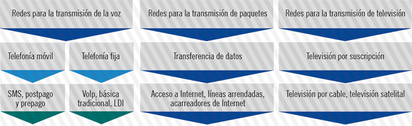
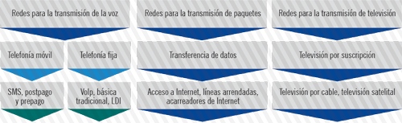
Fuente: Elaboración propia
Telefonía móvil
Las redes de telefonía móvil empezaron su desarrollo a partir de 1979, cuando NTT de Japón desplegó el primer sistema celular analógico para la transmisión de voz. Desde entonces, las redes han experimentado cambios significativos, en particular, por el hecho de que estos sistemas de primera generación no operaban entre sí (interoprabilidad).
Los sistemas de mayor despliegue, en esta primera generación, fueron el Advanced Mobile Phone Systems (AMPS) en los Estados Unidos y el Total Access Communications Systems (TACS) en Europa. Ambos utilizaban modulación por frecuencia para la transmisión de radio.A final de la década de los ochenta, aparecen los sistemas de segunda generación, con la particularidad de que soportaban la transferencia de datos a bajas velocidades. Estos sistemas se basaron en tecnologías de acceso digital múltiple (TDMA y CDMA), con el fin de mejorar la eficiencia espectral, disponer de servicios de datos y mejorar el roaming.
El estándar más aceptado fue el Global System for Mobile Communications (GSM), que sigue siendo operable en muchas partes del mundo. Este estándar se mantuvo en desarrollo y evolucionó para convertirse en la generación 2.5G, gracias a la estandarización en el diseño de dispositivos tales como el BSC (Base Station Controller) y el MSC (Mobile Switching Centre), la inclusión del comercialmente exitoso SMSC (Short Message Service Centre) y a la consolidación del PCN (Packet Core Network) que fue posible por el despliegue de la tecnología GPRS (General Packet Radio Services), que proporcionó las capacidades necesarias para establecer menores tiempos de conexión, la posibilidad de cobro por tráfico y mayores velocidades para el acceso inalámbrico a la red.
En la figura 3 se muestra la arquitectura estándar de un sistema de segunda generación, con los elementos de acceso y de núcleo.
Figura 3. Arquitectura de red para un sistema de segunda generación
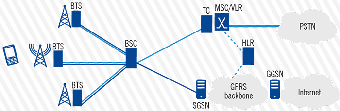
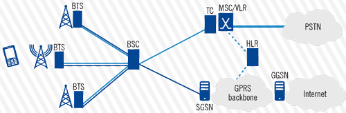
Fuente: Elaboración propia
Posteriormente, el paso hacia la tercera generación de redes móviles, llegó con el desarrollo de la tecnología para transmisión de datos EDGE (Enhanced Data Rates in GSM Environment), la cual aumentaba el volumen de tráfico sobre la interfaz de aire, aunque el comportamiento de los paquetes sobre esta interfaz siguiera siendo similar al de una llamada en la red de conmutación de circuitos. Luego de este avance se buscó que el diseño de la plataforma tecnológica de las redes móviles se rigiera por un estándar global, dando como resultado el lanzamiento del IMT-2000 de la Unión Internacional de Telecomunicaciones, cuyos requerimientos fueron consolidados en la primera versión de las especificaciones de la tecnología WCDMA, elaborada por la 3GPP (3rd Generation Partnership Project) en el llamado Realese 99.
La arquitectura de los sistemas de tercera generación sufrió cambios significativos en la red de acceso, principalmente en dispositivos como el Nodo B y el RNC (Radio Network Controller), pero también en componentes del núcleo, como el SGSN (Serving GPRS Support Node), que sufrió modificaciones para la transferencia, la tunelización y el enrutamiento de paquetes, así como para el manejo de la movilidad entre áreas y la facturación de datos. Además, se creó una capa de control de servicios denominada IMS (Internet and Multimedia Subsystem) que incrementó las funcionalidad de las redes 3G.
Figura 4. Arquitectura de red para un sistema de tercera generación
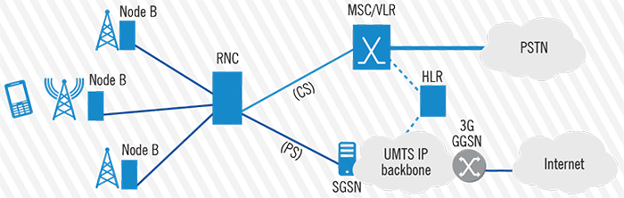
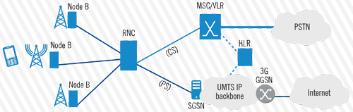
Fuente: Elaboración propia
En general, las nuevas funcionalidades de estos sistemas produjeron beneficios en competitividad para las redes 3G, producto de la reducción de la latencia, mayor eficiencia espectral al tener una mejor utilización del espectro, aumento en la cobertura, menores costos de operación y un incremento en la velocidad de transferencia de datos.
El efecto de que los usuarios tuvieran a disposición una mayor capacidad para enviar y recibir datos generó un incremento en la demanda que llevó a fabricantes, centros de investigación y operadores a continuar con la evolución de los sistemas de telefonía móvil, para aprovechar la tendencia en convergencia de servicios y redes, sobre el protocolo de Internet (arquitecturas all-IP). De esta forma y a partir del lanzamiento del Release 8 de la 3GPP, sobre la evolución de la arquitectura del sistema, inicia el desarrollo de los sistemas de cuarta generación comúnmente denominados LTE (Long Term Evolution), de los cuales se espera una provisión mayor de servicios móviles, acceso de banda ancha para datos, menor costo en el transporte de la voz, mensajería unificada y mayor flexibilidad para el roaming. A la vez, se espera que los sistemas de 4G se conviertan en un motor para el desarrollo económico y social, por lo que su despliegue se ha acelerado, en diferentes partes del mundo. La primera red comercial de 4G en entrar en operación fue instalada por TeliaSonera, en 2009 en Oslo y Estocolmo, y para noviembre de 2012 se contaba con 113 redes en 51 países.
Estas redes de 4G han logrado alcanzar los requerimientos operacionales de la IMT-Advanced, entre ellos: tasa pico de transferencia de datos de 1Gbps en el downlink y 500 Mbps en el uplink, eficiencia espectral en el downlink de 15 bps/Hz y de 6.75 bps/Hz en el uplink, movilidad hasta 350 km/h, ancho de banda escalable, agregación de espectro y capacidad de operar en canales de hasta 40 MHz. La figura adjunta muestra la arquitectura de estos sistemas de 4G.
Figura 5. Arquitectura de red para un sistema de cuarta generación
Fuente: Elaboración propia
Telefonía fija
En general, la telefonía básica tradicional se puede describir como el servicio asociado a la Red de Telefonía Pública Conmutada (PSTN por sus siglas en inglés), la cual se mantuvo por décadas como el método más popular para establecer comunicaciones, debido a su simplicidad y facilidad de instalación.
Recibe su nombre por la forma en la que se establecen las llamadas, ya que los terminales se mantienen fuera de línea, hasta que estos intentan enlazarse con otros terminales que hayan marcado el respectivo número telefónico. Para ello, se habilitan conexiones temporales que pueden variar de acuerdo con la cantidad y con la procedencia de las solicitudes, esto es lo que se conoce como conmutación de circuitos.
La topología más habitual es contar con una serie de centrales jerárquicas encargadas de realizar la conmutación entre abonados conectados al bucle local. En general, la red PSTN está compuesta por elementos de acceso desde el terminal del usuario, la caja de dispersión y el cableado de pares trenzados de cobre (bucle local), hasta los distribuidores y switches inteligentes, que enlazan las centrales y encaminan las llamadas. La figura adjunta muestra un detalle general de los elementos dentro de una arquitectura PSTN para telefonía fija por conmutación de circuitos (telefonía básica tradicional).
Figura 6. Elementos de una red de telefonía pública conmutada (PSTN)
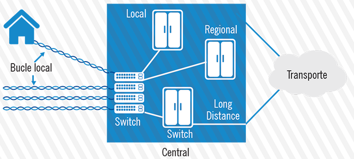
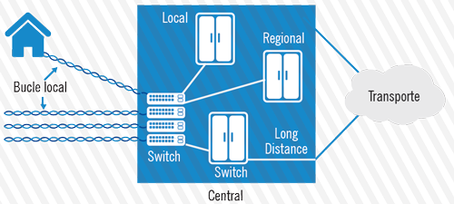
Fuente: Elaboración propia
El modelo jerárquico de las centrales reduce el número de troncales (comúnmente enlaces digitales E1 con tasas de transmisión de 2.048 Mbps y señalización en SS7) y se distribuye en centrales primarias que conectan llamadas fuera de áreas geográficas definidas;centrales interurbanas que administran el tráfico entre puntos de terminación asociados a varias centrales locales y las centrales locales que se ubican en el bucle local, en el punto más cercano al abonado.
Algunos entes reguladores en diferentes países han definido la telefonía fija como un servicio disponible al público, que consiste en la explotación comercial de las actividades que permiten el transporte de la voz, en donde el terminal que origina la comunicación se encuentra conectado a un punto de terminación de red de carácter fijo. Esto dividió la telefonía fija en telefonía básica tradicional y telefonía pública, donde la telefonía básica tradicional explota comercialmente la voz, a través de terminales conectados en algún punto de la red. Esto ha permitido el desarrollo de otros servicios, tanto de voz como de datos, siendo de interés, en la parte de telefonía, el servicio de voz sobre el protocolo de Internet o VoIP.
El servicio de VoIP empezó a crecer en el mundo por su utilidad en las empresas con gran consumo de tráfico y altos costos de operación, en la parte de comunicaciones. Su implementación tecnológica inició luego de que la Unión Internacional de Telecomunicaciones lanzará la recomendación H.323 para comunicaciones audiovisuales, sobre las redes de conmutación de paquetes. El despliegue masivo de este servicio se aceleró con la introducción del softswitch en el mercado (dispositivo inteligente, para la administración y el control de llamadas, que permite la integración con la PSTN, manteniendo la escalabilidad, la confiabilidad y la calidad del servicio). Otro elemento que debe señalarse es el gateway, que tiene dos componentes, el media gateway y el gateway controller, que facilitan la interoperabilidad con las redes conectadas y la señalización. La figura adjunta resume la implementación de la arquitectura de VoIP y su conexión con la red de telefonía fija.
Figura 7. Integración del servicio de voz sobre IP con la red PSTN
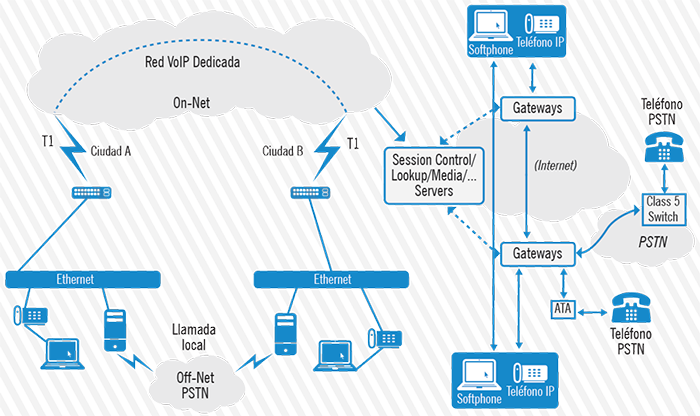
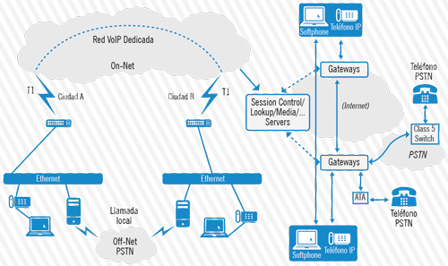
Fuente: Elaboración propia
Televisión por suscripción
A finales de la década de 1940, las empresas de televisión, en Estados Unidos, adoptaron la interfaz de cable coaxial para modificar su servicio de provisión de contenidos en una sola vía;desde entonces su modelo de negocio ha ido evolucionado junto con los avances de esta tecnología, los cuales, a la fecha, permiten transmitir voz, vídeo y datos, convirtiendo a los operadores de televisión por cable en proveedores de servicios de telecomunicaciones.
Actualmente, la red de acceso para el servicio de televisión por suscripción está construida sobre un híbrido entre coaxial y fibra óptica denominado red HFC. Esta red, en particular, utiliza una arquitectura de árbol y ramales con transmisión a dos vías, con separaciones entre módems que van de los 24 km a los 80 km, y con una propagación máxima del retardo de 0,8 ms, considerando que la máxima distancia al CMTS (Cable Modem Termination System) es de 80 km.
La configuración típica para una red de televisión por cable, capaz de proveer servicios de telecomunicaciones se muestra en la figura adjunta, donde se incluyen los elementos principales que conforman el sistema.
Figura 8. Diagrama general para una red de televisión por suscripción
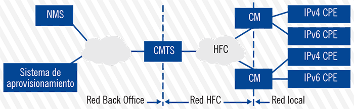
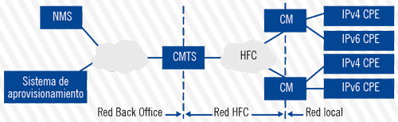
Fuente: Elaboración propia
Se aprecia en la figura adjunta como el CMTS es el componente medular en la red, ya que recibe las señales del headend y enlaza el sistema de administración de la red (NMS) y el sistema de aprovisionamiento, con la red HFC que distribuye las señales hasta los usuarios, por medio de los cable módems. El objetivo de esta implementación recae en la necesidad de incrementar la capacidad en ancho de banda, las velocidades, la escalabilidad, mejorar las prácticas de mantenimiento de la red y ofrecer nuevos servicios.
En la parte de radio frecuencia, se utiliza para el downstream una ventana cuyo límite inferior puede estar en los 54 MHz, 87.5 MHz, 108 MHz o 258 MHz y el límite superior, en el rango de 550 MHz a 1002 MHz. En el upstream se utilizan ventanas con el límite inferior entre los 5-42 MHz, 5-65 MHz, 5-85 MHz, 5-117 MHz o los 5-204 MHz y con un límite superior siempre mayor que 204 MHz.
Las señales de vídeo satelitales o terrestres sobre el aire, que estén dentro de estos valores de frecuencia, se reciben en el headend y se combinan con el contenido local para ser moduladas y luego trasmitidas sobre fibra, para minimizar pérdidas en largas distancias, luego en los nodos se realiza la conversión de la señal, para ser transmitida de forma analógica con los segmentos de cable coaxial, los cuales requieren de amplificación para mantener la calidad de la señal para todos los usuarios.
Esta red HFC es capaz de proveer comunicación bidireccional, la porción de fibra por sí sola puede hacerlo, al utilizar dos hilos para esto, mientras que el coaxial utiliza duplexación por división de frecuencia, para lograr el downstream y el upstream en el mismo medio;por ende, los amplificadores también deben ser bidireccionales. Además, se reserva un canal de 6 MHz para datos y se aplica una modulación de 64 QAM para obtener un ancho de banda disponible de 30 Mbps en el downstream, mientras que en el upstream, donde se requiere menor ancho de banda, se modula con QPSK y 16 QAM. La conversión de la señales de RF en señales digitales se realiza en el CMTS y se tiene especial precaución de que no existan colisiones en la transmisión al usar CSMA/CD, debido a que el ancho de banda es compartido entre todos lo cable módems. El detalle de esta arquitectura de red se muestra en la figura adjunta.
Figura 9. Arquitectura de la red de televisión por suscripción que facilita la transmisión de datos
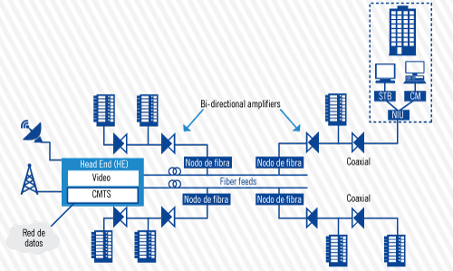
Fuente: Elaboración propia
Transferencia de datos
Dentro de esta categoría de servicio se incluyen todas aquellas redes de conmutación de paquetes y todos los sistemas que, para habilitar sus servicios, utilicen en su capa de red el protocolo de Internet, los demás protocolos de enrutamiento o ambos.
Con conmutación de paquetes se hace referencia al método que permite que cualquier flujo de datos transmitido sobre una comunicación digital, se convierta en pequeñas estructuras llamadas paquetes, las cuales además de la información que transportan, llevan consigo una cantidad de información adicional que utilizan para indicarle a los switches hacia donde deben avanzar. Por otra parte, un switch (conmutador) se entiende como aquel dispositivo que, a través de un software especializado, recibe los paquetes que arriban desde ciertos enlaces, los procesa y los reenvía hacia su destino sobre otros enlaces.
En general, la conmutación de paquetes aprovecha la capacidad de los switches (o routers) para multiplexar y demultiplexar las tramas de datos pertenecientes a distintas sesiones de transferencia de información, entre distintas redes de computadoras, que se interconectan a través de enlaces físicos cuya capacidad puede ser compartida por múltiples usuarios.
Cabe resaltar que las redes de conmutación de paquetes pueden diferenciarse considerando dos aspectos: la transmisión de datagramas y la configuración de circuitos virtuales.
La conmutación de los datagramas –también denominada connectionless– supone que la ruta de la información no es conocida, debido a que los paquetes se descomponen y se enrutan por diferentes enlaces, hasta que se reordenan en el destino. Por otra parte, con circuitos virtuales se logra que los paquetes sigan una misma ruta y que dicha ruta sea escogida desde el inicio de la sesión, aunque esto hace que la transmisión sea menos flexible y que requiera un enlace dedicado. Este tipo de comunicación disminuye los cálculos en los equipos activos y provee un grado de seguridad conocido desde el principio;ejemplos de esta tecnología son Frame Relay, ATM, VCI y MPLS que permiten, a pesar de sus diferencias, asociar sus funcionalidades a servicios en la capa de transporte y proveer también servicios entre la capa de datos y la capa de red, como por ejemplo los circuitos privados virtuales y similares.
El enrutamiento por datagramas normalmente utiliza el protocolo IP y su implementación se ha extendido desde redes de área local (LAN) hasta redes de área ancha (WAN), mientras que otros protocolos como BGP, se han implementado para el transporte entre sistemas autónomos, lo que ha permitido el desarrollo de múltiples modalidades para el acceso a Internet y servicios de transporte internacional, peer-to-peer y varios más. En resumen, la conmutación de paquetes ofrece ventajas, como una eficiente administración de los datos, capacidad para proveer ancho de banda variable, la posibilidad de generar tablas de enrutamiento, simplicidad y la provisión de la calidad del servicio.
Ahora bien, el desarrollo de estas tecnologías mencionadas, logró el despliegue de redes capaces de transmitir la información, a través de un conjunto de tecnologías que vinculan la parte de enrutamiento de la información con el transporte de esta, por ejemplo, como una red de circuitos virtuales logra comunicar dos enrutadores en diferentes redes LAN basadas en IP.
Para entender de mejor esta relación, entre enrutamiento y transporte, se desarrolló un modelo conceptual donde el flujo de información para establecer una comunicación se divide en 7 capas diferentes. Este modelo desarrollado por la Organización Internacional de Estándares (ISO), se conoce como modelo OSI (del inglés Open System Interconnection) y a partir de este, se puede identificar y derivar la relación entre enrutamiento y transporte.
Este modelo agrupa diversas funcionalidades en sus 7 capas. Cada una de las capas provee servicios a la capa que está por encima de ella (capa superior) y recibe servicios de la capa que se encuentra debajo de ella (capa inferior).
La comunicación se establece entre capas de un mismo nivel. Es así, como por ejemplo, la capa 3 de un equipo en una red, se comunica únicamente con la capa 3 de otro equipo en esa misma red y así respectivamente.
Figura 10. Representación del modelo OSI
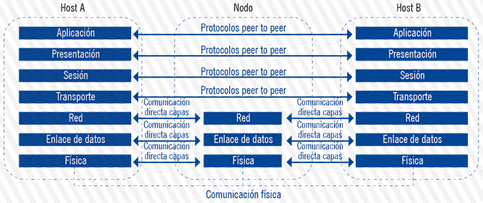
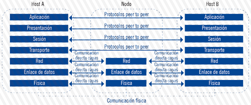
Fuente: Elaboración propia
Estas capas definen funciones, pero no definen un protocolo o tipo de conexión específicos. Para cada capa existe una serie de protocolos e interfaces que han sido adoptados por la industria de telecomunicaciones para hacer la comunicación efectiva.
El modelo de capas OSI ha sido una referencia indispensable para conceptualizar las redes de telecomunicaciones. Una de estas conceptualizaciones es el modelo TCP/IP (Transmission Control Protocol/Internet Protocol) que relaciona la parte de enrutamiento y transporte. Este modelo, también llamado modelo de Internet, describe un conjunto de guías para el diseño e implementación de protocolos de red, que permiten que un equipo pueda comunicarse en una red de conmutación de paquetes en presencia de datagramas, circuitos virtuales y demás, esto gracias a que el modelo provee conectividad extremo a extremo, mediante la especificación de protocolos, formato de datos y direccionamiento, control de congestión, entre otras funciones.
De acuerdo con lo establecido por la IETF (Internet Engineering Task Force), en el RFC 1122, el modelo TCP/IP está formado por cuatro capas, no siete, estas son: acceso al medio, Internet, transporte y aplicación.
Como se mencionó, la capa de Internet utiliza el llamado protocolo lP para ofrecer servicios de direccionamiento, enrutamiento y QoS. El direccionamiento logra identificar los equipos terminales (hosts) presentes en red y facilita el enrutamiento de la información entre estos, a través de protocolos que utilizan distintos tipos de algoritmos para elegir la ruta y la forma de alcanzar un destino dado. Estos protocolos se dividen en dos clases principales, protocolos de estado de enlace (link-state routing protocols) como OSPF y IS-IS y los protocolos de vector de distancia (distance-vector routing protocol) como RIP e IGRP.
Por otra parte, en la capa de transporte, los protocolos más comúnmente utilizados son el TCP (transport control protocol) y el UDP (user datagram protocol). En esta capa, se establece un canal de comunicación de datos, con el fin de permitir un intercambio de datos extremo a extremo. Este intercambio de datos se da en la forma de orientado a conexión, mediante el protocolo TCP, y no orientado a conexión, mediante el protocolo UDP. Esta relación, entre TCP e IP, consolidó las redes de conmutación de paquetes y permitió el desarrollo de sistemas de comunicación interconectados globalmente.
Para finalizar, se debe mencionar que toda esta arquitectura de conmutación de paquetes se apoya en una infraestructura de red, denominada como capa física en el modelo de referencia OSI. Dicha infraestructura está conformada por una serie de plataformas tecnológicas que utilizan distintos medios, para proporcionar los enlaces de comunicación;entre estas se puede mencionar las redes basadas en fibra óptica, en cable coaxial, sobre par trenzado de cobre e incluso sobre medios inalámbricos. La figura adjunta representa una serie de redes interconectadas basadas en la conmutación de paquetes.
Figura 11. Esquema de una serie de redes interconectadas
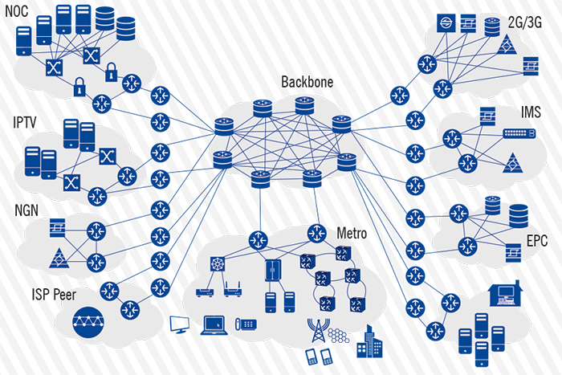
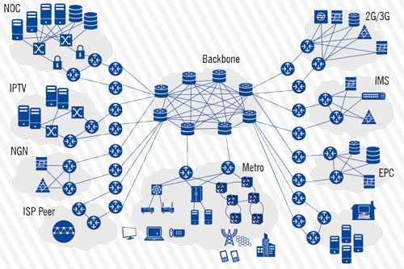
Fuente: Elaboración propia
Para finalizar, se debe mencionar que toda esta arquitectura de conmutación de paquetes se apoya en una infraestructura de red, denominada como capa física en el modelo de referencia OSI. Dicha infraestructura está conformada por una serie de plataformas tecnológicas que utilizan distintos medios, para proporcionar los enlaces de comunicación;entre estas se puede mencionar las redes basadas en fibra óptica, en cable coaxial, sobre par trenzado de cobre e incluso sobre medios inalámbricos. La figura 11 representa una serie de redes interconectadas basadas en la conmutación de paquetes.
Resumen de los servicios incluidos en el estudio
En la sección anterior, se realizó una descripción técnica de cada una de las redes que soportan los diferentes tipos de servicios, que se agruparon para la recopilación de información de mercado de los operadores y proveedores de servicio autorizados en el país.Con esto se logra dejar en claro cuáles son las funcionalidades y particularidades de cada uno de los grupos de servicios escogidos, y se contrasta con las ofertas comerciales en el mercado, para especificar cuáles servicios disponibles al público integran cada una de las cuatro categorías mencionadas en la tabla adjunta: telefonía móvil, telefonía fija, transferencia de datos y televisión por suscripción.
Tabla 2. Esquema de una serie de redes interconectadas
| Categoría del servicio de telecomunicaciones | Modalidades en las que es comercializado | Características de las redes que lo soportan |
|---|
| Telefonía móvil | Mensajería instantánea (SMS), mensajería multimedia (MMS), voz postpago, voz prepago. | Facilita las comunicaciones de voz sobre medios inalámbricos en el acceso, permite el envío y la descarga de datos a través de la interfaz de aire. Su evolución se dirige hacia una arquitectura all-IP. |
| Telefonía fija | Telefonía básica tradicional, voz sobre IP (VoIP), RDSI. | Conocida como PSTN, utiliza un conjunto de centrales de intercambio y de enlaces troncales para poder establecer conexiones temporales entre 2 extremos, lo que se conoce como conmutación de circuitos. |
| Televisión por suscripción | Televisión satelital, televisión por cable. | El servicio se provee mediante distintas tecnologías, puede ser un sistema satelital o un sistema de cable basado en DOSIS 2.0 y superiores. Puede transmitir datos. |
| Transferencia de datos | Acceso a Internet, carrier internacional, datos móviles, líneas arrendadas. | Las comunicaciones se logran, generando paquetes de información que se reenvían por la red independientemente del medio de propagación o red utilizada. Se basa en dos técnicas: el enrutamiento de datagramas y los canales virtuales. |
Fuente: Elaboración propia
Resumen de indicadores presentados
En este apartado se presentan las definiciones generales de cada indicador que se incluyó en el presente informe, con el propósito de ofrecer claridad al lector sobre la información de mercado procesada, cuyo volumen y variedad se espera incrementen con el tiempo.
Tabla 3. Servicio de telefonía fija
| Indicador | Definición general |
|---|
| Total de líneas telefónicas fijas activas | Número de líneas que se activaron para establecer la comunicación entre terminales sobre la red de telefonía pública conmutada (PSTN). |
| Suscripciones de líneas telefónicas sobre VoIP | Número de suscripciones registradas para el servicio de voz sobre el protocolo de Internet (VoIP), servicio que utiliza la red de telefonía pública conmutada PSTN. |
| Suscripciones al servicio RDSI, BRI y PRI | Total de suscripciones a la red digital de servicios integrados (RDSI), que pueden separarse en: servicio de interfaz de velocidad básica (BRI) y el de velocidad primaria (PRI). |
| Tráfico telefónico fijo servicio básico tradicional | Tráfico en minutos generado en la red de telefonía pública conmutada (PSTN), hacia la misma red y hacia otras redes nacionales e internacionales. |
| Tráfico dentro de la red | Tráfico en minutos originado y terminado dentro de la misma red. |
| Tráfico fuera de la red (saliente) | Tráfico en minutos originado dentro de una red, con destino hacia otras redes. |
| Tráfico fuera de la red (entrante) | Tráfico en minutos originado en distintas redes y terminado dentro de una sola red. |
| Tráfico sobre VoIP | Tráfico en minutos, tanto dentro como fuera de la redes de voz, sobre el protocolo de Internet |
| Ingreso por telefonía fija | Suma de los ingresos facturados por cada suscripción mensual y el tráfico generado por estos suscriptores. |
| Ingreso por VoIP | Este indicador se obtiene de la suma de los ingresos facturados por la suscripción mensual y el tráfico generado por los suscriptores de la telefonía IP. |
Tabla 4. Servicio de transferencia de datos
| Indicador | Definición general |
|---|
| Suscripciones al servicio de acceso a Internet (cableado e inalámbrico) | Número de conexiones que se activaron durante el período en estudio, para brindar el servicio de acceso a Internet sobre las distintas plataformas disponibles, sean estas redes cableadas o redes inalámbricas. |
| Suscripciones con acceso fijo (cableado) a Internet | Número de conexiones con acceso fijo a Internet, que utilizan plataformas de acceso con medios físicos cableados (xDSL, cable módem, fibra óptica, entre otras). |
| Suscripciones con acceso inalámbrico a Internet | Número de conexiones con acceso fijo a Internet sobre tecnologías inalámbricas que utilizan el espectro radioeléctrico. |
| Suscripciones a datos móviles especiales | Número de conexiones a datos móviles transmitidos por medios especiales como data cards. |
| Líneas arrendadas nacionales e internacionales en el mercado minorista | Número de conexiones activadas para establecer enlaces que garantizan disponibilidad, ancho de banda y seguridad, que se vendieron al por menor, dentro y fuera del país. |
| Líneas arrendadas nacionales e internacionales en el mercado mayorista | Número de conexiones activadas para establecer enlaces que garantizan disponibilidad, ancho de banda y seguridad, que se vendieron al por mayor, dentro y fuera del país. |
| Conexiones por la prestación de otros servicios de enlaces dedicados (tramas, VPN, enlaces, puertos y fibra oscura) | Número total de conexiones activadas para establecer enlaces dedicados que garantizan disponibilidad, ancho de banda y seguridad, sobre distintas plataformas tecnológicas. |
| Tráfico total de datos | Cantidad total de datos medidos en TB, que se transfieren entre todas las distintas redes desplegadas en el país. |
| Ingreso total facturado por servicio de acceso a Internet fijo alámbrico | Total de ingresos facturados y obtenidos por la provisión del servicio de Internet fijo alámbrico. |
| Ingreso total facturado por servicio de acceso a Internet inalámbrico | Total de ingresos facturados y obtenidos por la provisión del servicio de acceso a Internet inalámbrico fijo. |
| Ingreso total facturado por servicio de acceso a Internet inalámbrico fijo | Total de ingresos facturados y obtenidos por la provisión del servicio de Internet inalámbrico, incluyendo el acceso a Internet móvil. |
| Ingreso total facturado por servicio de acceso a Internet móvil | Total de ingresos facturados y obtenidos por la provisión del servicio de acceso a Internet móvil. Incluye el acceso a Internet móvil a través de data cards. |
| Ingreso total facturado por servicios de acceso a Internet | Ingreso facturado por la prestación del servicio de acceso a Internet (alámbrico e inalámbrico). |
| Ingreso total facturado por concepto de líneas arrendadas y servicios similares | Ingreso total facturado y obtenido por el suministro de líneas arrendadas y otros servicios como tramas, VPN, enlaces, puertos y fibra oscura. |
Tabla 5. Servicio de telefonía móvil
| Indicador | Definición general |
|---|
| Total de suscripciones móviles | Número total de suscripciones para el servicio de telefonía móvil en modalidades prepago y postpago. |
| Suscripciones móviles (postpago) | Número de líneas que registraron al menos una actividad tasable, sobre la red de telefonía móvil, bajo la modalidad postpago. |
| Suscripciones móviles (prepago) | Número de líneas que utilizan tarjetas prepagadas, que registraron por lo menos una actividad tasable, dentro de los 90 días calendario, anteriores a la última tasación. |
| Tráfico de voz móvil total | Tráfico en minutos generado por los suscriptores de la telefonía móvil, en sus distintas modalidades, en su propia red y hacia cualquier otra red. |
| Tráfico móvil prepago | Tráfico en minutos generado por los suscriptores de la telefonía móvil en la modalidad prepago, en su propia red y hacia cualquier otra red. |
| Tráfico móvil postpago | Tráfico en minutos generado por los suscriptores de la telefonía móvil en modalidad postpago, en su propia red y hacia cualquier otra red. |
| Tráfico de voz móvil internacional total | Tráfico en minutos desde y hacia redes internacionales. |
| Tráfico de voz móvil internacional de entrada | Tráfico en minutos con origen en redes internacionales, con destino a red móvil propia. |
| Tráfico de voz móvil internacional de salida | Tráfico en minutos con origen en la red móvil propia, con destino internacional. |
| Tráfico total SMS | Cantidad de mensajes cortos intercambiados entre suscriptores de una misma red móvil, así como los enviados y recibidos de y hacia otras redes móviles, en ambas modalidades de pago. |
| Tráfico de SMS on net | Cantidad de mensajes breves intercambiados entre suscriptores de una misma red móvil, en ambas modalidades de pago. |
| Tráfico de SMS off net | Cantidad de mensajes breves intercambiados entre suscriptores de una red móvil, hacia cualquier otra red, en ambas modalidades de pago. |
| Tráfico roaming de voz total | Cantidad de minutos de todas las comunicaciones establecidas que entran y salen bajo el servicio de roaming. |
| Tráfico telefónico roaming de salida | Tráfico en minutos de las comunicaciones establecidas por clientes propios de una red hacia otras redes extranjeras. |
| Tráfico telefónico roaming de entrada | Tráfico en minutos de comunicaciones establecidas por clientes extranjeros en redes propias. |
| Tráfico total MMS | Cantidad de mensajes multimedia intercambiados entre suscriptores de una misma red móvil y entre suscriptores de otras redes móviles, bajo cualquier modalidad de pago. |
| Precio promedio de una llamada local por minuto (en hora punta a una red fija) para telefonía móvil | Precio de una llamada local por minuto realizada en horas punta desde un teléfono móvil (prepago o postpago) a la red telefónica fija. *El cálculo se realiza a partir de la distribución de los ingresos generados por concepto de llamadas móviles prepago realizadas hacia una red fija, durante la franja horaria de alto consumo (punta), entre la cantidad de minutos en estas llamadas. Incluye impuestos. |
| Precio promedio de una llamada local por minuto (fuera de horas punta, a una red fija) para telefonía móvil | Precio de una llamada local por minuto realizada fuera de horas punta desde un teléfono celular móvil (prepago o postpago) a la red telefónica fija. El cálculo de este indicador puede realizarse a partir de la distribución de los ingresos generados por concepto de llamadas móviles prepago realizadas hacia una red fija, durante la franja horaria considerada de bajo consumo, entre la cantidad de minutos en estas llamadas. Incluye impuestos y la tasa impositiva aplicable. |
| Precio promedio de una llamada local por minuto (horas punta, off net) para telefonía móvil | Precio de una llamada local por minuto realizada en horas punta desde un teléfono móvil (prepago o postpago) a la telefonía celular móvil de otra red. El cálculo de este indicador puede realizarse a partir de la distribución de los ingresos generados por concepto de llamadas móviles prepago off net, entre la cantidad de minutos en estas llamadas. Incluye impuestos y la tasa impositiva aplicable. |
| Precio promedio de una llamada local por minuto (fin de semana/por la noche, on net) para telefonía móvil | Precio de una llamada local por minuto en fin de semana/por la noche, desde un teléfono celular móvil (prepago o postpago) a la telefonía celular móvil de la misma red. Se deberán incluir impuestos. De lo contrario, debe señalarse en una nota, indicando la tasa impositiva aplicable. El cálculo de este indicador puede realizarse a partir de la distribución de los ingresos generados por concepto de llamadas móviles prepago on net, realizadas durante el fin de semana/noche, entre la cantidad de minutos. |
| Precio promedio de una llamada local por minuto (fin de semana/por la noche, off net) para telefonía móvil | Precio de una llamada local por minuto realizada durante el fin de semana/por la noche, desde un teléfono celular móvil (prepago o postpago) a la telefonía móvil de otra red. El cálculo de este indicador, puede realizarse a partir de la distribución de los ingresos generados por concepto de llamadas móviles prepago off net, realizadas durante el fin de semana/noche, entre la cantidad de minutos. Incluye impuestos y la tasa impositiva aplicable. |
| Precio promedio de una llamada local por minuto (fin de semana/por la noche, a una red fija) para telefonía móvil | Precio de una llamada local por minuto realizada durante el fin de semana/por la noche desde un teléfono móvil (prepago o postpago) a la red telefónica fija. El cálculo de este indicador puede realizarse a partir de la distribución de los ingresos generados por concepto de llamadas móviles prepago hacia una red fija realizadas durante el fin de semana/noche, entre la cantidad de minutos (tráfico). Incluye impuestos y la tasa impositiva aplicable. |
| Precio promedio SMS (on net) para telefonía celular móvil prepago y postpago | Precio promedio del envío de un mensaje breve (SMS) de un teléfono celular móvil (prepago o postpago) a la telefonía celular móvil de la misma red. El cálculo de este indicador puede realizarse a partir de la distribución de los ingresos generados, entre la cantidad de SMS on net. Incluye impuestos. |
| Precio promedio SMS (off net) para telefonía móvil prepago y postpago | Precio promedio del envío de un mensaje breve (SMS) de un teléfono móvil (prepago o postpago) a la telefonía celular móvil de otra red. El cálculo de este indicador puede realizarse a partir de la distribución de los ingresos generados, entre la cantidad de SMS off net. Incluye impuestos y la tasa impositiva aplicable. |
| Ingreso total telefonía móvil | Corresponde a la suma del ingreso obtenido por concepto del servicio de voz móvil, SMS/MMS e Internet. |
| Ingreso total voz móvil asociado al servicio telefónico móvil prepago y postpago | Ingreso asociado al servicio de telefonía móvil prepago y postpago. Se construye a partir de la agregación del ingreso por concepto de la tarifa mensual, el ingreso por minutos excedentes y el ingreso correspondiente a otros cargos que se generan como parte del suministro del servicio de telefonía móvil y que no forman parte de la tarifa mensual ni de aquella inherente a los minutos excedentes, como es el caso de las multas por suspensión y reconexión. |
| Ingreso SMS/MMS | Ingreso asociado al tráfico de mensajes breves (SMS) y mensajes multimedia (MMS) on net y off net. |
| Ingreso Internet móvil | Ingreso asociado a la prestación del servicio de acceso a Internet móvil. |
| Ingreso móvil prepago | Corresponde a la suma del ingreso obtenido por concepto del servicio de voz móvil, SMS/MMS e Internet, bajo la modalidad prepago. |
| Ingreso móvil postpago | Corresponde a la suma del ingreso obtenido por concepto del servicio de voz móvil, SMS/MMS e Internet, bajo la modalidad postpago. |
| Ingreso por tráfico telefónico roaming de salida (minutos) | Ingreso generado por los subscriptores a la telefonía móvil al efectuar y recibir llamadas, cuando se encuentran fuera de la zona de servicio de la red de su país, por ejemplo, cuando viajan al extranjero. |
| Ingreso por tráfico telefónico roaming de entrada (minutos) | Ingreso generado por los subscriptores visitantes (extranjeros) al efectuar y recibir llamadas en un país. Estos ingresos son obtenidos por los operadores de red en el país de los subscriptores visitantes. |
| Ingresos SMS y MMS roaming saliente | Ingreso generado por los subscriptores a la telefonía móvil al enviar SMS y MMS, cuando se encuentran fuera de la zona de servicio de la red de su país. |
Tabla 6. Servicio de televisión por suscripción
| Indicador | Definición |
|---|
| Cantidad total de suscripciones al servicio de televisión por suscripción a través de redes de televisión por cable | Número de suscripciones al servicio de televisión por suscripción, cuya transmisión se hace primordialmente por redes híbridas de fibra óptica y cable coaxial (HFC), que permiten la provisión de varios servicios de telecomunicaciones. |
| Cantidad total de suscripciones al servicio de televisión por suscripción mediante antenas directas al hogar (DTH) | Número de suscripciones al servicio de televisión por suscripción, correspondientes a señales de televisión que se reciben desde un satélite de comunicaciones y se transmiten desde el operador hasta el equipo de recepción del usuario final. |
| Cantidad total de suscripciones al servicio de televisión por suscripción mediante IPTV | Número de suscripciones al servicio de televisión por suscripción, mediante conexiones de banda ancha sobre el protocolo IP. |
| Cantidad total de suscripciones al servicio de televisión por suscripción mediante distribución multipunto (MMDS) | Número de suscripciones al servicio de televisión por suscripción, utilizando el servicio de distribución multipunto por microondas (MMDS, del inglés Microwave multipoint distribution service). Transmite las señales de forma inalámbrica hasta el usuario final y permite la provisión de otros servicios de telecomunicaciones. |
| Ingreso por concepto del servicio de televisión por suscripción | Ingreso total facturado por el servicio de televisión por suscripción, sin deducciones por ningún concepto (impuestos, devoluciones, rebajas, bonificaciones, descuentos, ventas anuladas, entre otras), obtenido en el país por los oferentes del servicio de TV por suscripción. Nota: En el caso de ingresos en una moneda distinta al colón, debe realizar la conversión de las cifras a colones utilizando el tipo de cambio de referencia del Banco Central de Costa Rica, al cierre de cada mes en ejercicio. |